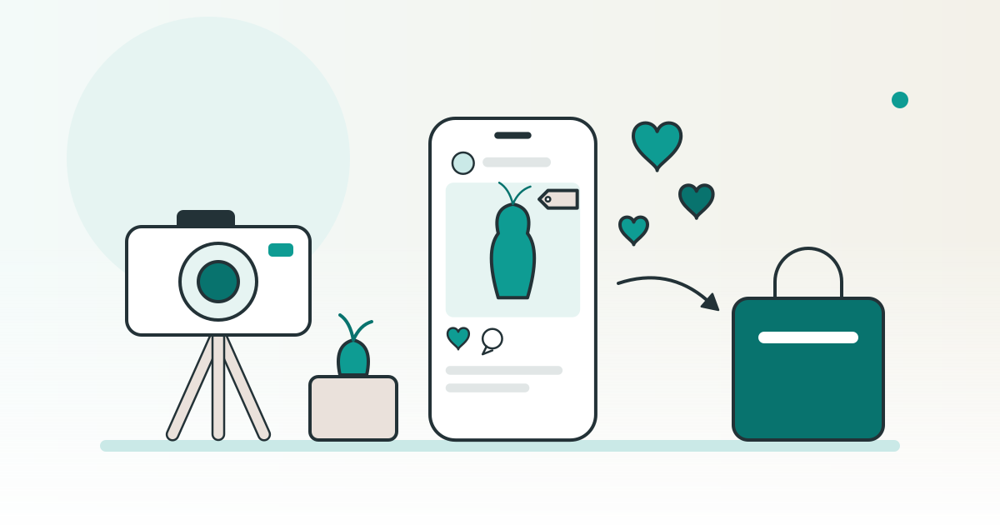

SHOPKIT コラム
ネットショップの集客をインスタで始める投稿の考え方とPR表示の決まり

インスタでネットショップの集客を始めるなら、届けたい相手、投稿で伝えること、案内する店のページを先に決めます。使う場面や商品の選び方など、読む人の疑問から投稿を用意しましょう。人に頼んで投稿してもらうときは、広告だと分かる表示と、商品の説明の根拠も整理します。
この記事は、完成品のネットショップを販売している SHOPKIT が書いています。
この記事で分かること
- 投稿の目的ごとに、写真と説明文を用意する考え方
- 無理なく続けるための準備と、お店への案内の点検箇所
- 依頼した投稿のPR表示と、品質・効果を伝えるときの注意点
最初の投稿は、商品を使う場面と店の考えから
何を載せるか迷ったら、商品を選ぶ人が知りたいことからテーマを選びます。誰に向けた店か、どんな場面で使う商品か、何を基準に選んでいるかを書き出してください。商品の紹介と店の雰囲気がつながるように、伝えたいことを投稿ごとに絞ります。
次の表は、投稿を作るための一般的な工夫です。成果が出た投稿の集計や、おすすめの投稿回数を示すものではありません。
| 投稿の目的 | 準備する写真と説明 | お店への案内 |
|---|---|---|
| 使う場面を伝える | 置く場所や使う様子が伝わる写真に、用途の説明を添える。 | 紹介した商品の説明ページへ案内する文を用意する。 |
| 選ぶときの疑問に答える | 大きさや素材など、迷いやすい点を、根拠のある商品情報と写真で示す。 | サイズや素材の詳しい説明を読む先を示す。 |
| 店の考えを伝える | 商品の選び方や、そろえたい雰囲気を、写真と短い説明にする。 | 店の紹介や、関係する商品一覧を読む先として選ぶ。 |
| お知らせを届ける | 案内する内容と時点を決め、店に掲載した情報と照らし合わせる。 | お知らせの詳しい内容が載っているページにつなぐ。 |
商品そのものが決まっていない場合は、投稿案を増やす前に、品ぞろえの軸を決めるところから始めましょう。誰に向けるかが変われば、伝える場面も見直します。
関連：ネットショップで何を売る？ペット用品から考えるジャンルの選び方
投稿を続ける準備は、写真・文章・見直しまでまとめる
投稿の頻度は、素材を用意するところから公開後の見直しまで、自分で続けられる範囲で決めます。撮影、説明文、店の情報との照合に使う時間を予定に入れ、用意できる内容から進めましょう。作業に必要な時間や、適切な投稿回数はこの記事では決めません。
投稿のメモには、伝える相手、テーマ、使う写真、説明の根拠、案内するページを書きます。写真が足りないのか、商品の情報が足りないのかも分けておくと、次に準備するものを選びやすくなります。
写真は、背景や明るさ、商品の大きさの見え方を並べて比べます。撮影の詳しい工夫は商品写真の記事へ進み、ここでは「どの疑問に答える写真が要るか」を決めましょう。人の写真を使う場合は、使ってよい範囲も素材のメモに残してください。
関連：ネットショップの商品写真の撮り方｜一覧でそろって見える条件と使えない画像
投稿の案内と、店で読む内容をそろえる
投稿で紹介する内容と、案内先で読む内容がつながっているかを、自分でたどって点検します。商品を紹介した投稿なら、その商品の情報を探せるか。店の考えを紹介した投稿なら、品ぞろえや店の説明につながるかを見ます。
- プロフィールの説明を整える。何を扱う店で、どんな人に向けているかを短く書きます。
- 案内するページを選ぶ。投稿を読んだ人に次に見てほしい内容を決め、リンクを使う場合は、その案内文もそろえます。
- 表示と行き先を見直す。スマホで案内をたどり、別の商品や古いお知らせに着いていないか、探してほしい説明まで読めるかを点検します。
プロフィールのリンク設定や、商品にタグを付ける機能の利用条件・操作は、Instagramヘルプセンターの最新の案内で確かめてください。ここでは、設定画面の手順や利用できる条件を説明しません。
公開後は、投稿した内容、届いた質問、案内先で迷った点をメモします。反応を見ながら、写真を増やすのか、説明文を補うのか、案内先を直すのかを分けて考える進め方があります。
人に頼む投稿は、広告と分かる表示を一緒に考える
投稿を依頼するときは、内容だけでなく、誰の広告だと伝えるかも依頼前に整理します。消費者庁は、事業者の広告であることを読む人が見分けられない表示を、ステルスマーケティングの規制の対象として説明しています。事業者が第三者へ依頼したり指示したりする広告も含む一方、広告ではない個人の感想などは対象に含めていません。
この規制の対象は、商品やサービスを提供する広告主であり、広告主から依頼を受けたインフルエンサーなどの第三者ではないと案内しています。お店が依頼する側なら、投稿者に任せたままにせず、表示も含めた依頼の内容を記録しましょう。
出典：消費者庁「ステルスマーケティング」の案内（対象となる広告と事業者）。
消費者庁のQ&Aは、「広告」や「PR」などの言葉だけに限定せず、表示全体を見た消費者に広告だと明確に伝わるかを示しています。また、投稿本文から離れた返信部分だけの広告表示は、読む人が見落とし、広告だと分からない場合が多いと説明しています。
商品を無償で渡す場合の説明では、提供の目的や内容、やり取り、これまでや今後の取引関係などによって判断が変わるとしています。投稿者が自分の意思で内容を決めた投稿を対象外とする説明もあるため、無償提供の有無だけで結論を出さず、依頼の実態を整理します。
出典：消費者庁「ステルスマーケティングに関するQ&A」（Q5・Q11・Q14・Q17）。個別の判断に迷う場合は、公的窓口や専門家へ相談してください。
依頼のメモには、紹介する商品、伝えてほしい事実とその資料、商品や金銭の提供、広告と分かる表示、掲載前に読む箇所を残します。読み手が投稿本文を見た場面で広告だと気づけるかを、投稿者と一緒に点検する進め方がおすすめです。
品質や効果の説明は、裏付ける情報と並べて読む
短い投稿でも、品質や効果を伝える文は、その根拠と一緒に用意します。消費者庁は、商品やサービスの内容について、実際より著しく優れていると消費者に受け取らせる表示などを、優良誤認表示として説明しています。
出典：消費者庁「表示規制の概要」（優良誤認表示）。
素材やサイズは商品の資料と照らし、使った感想はどの条件で感じたことかを書き分けます。写真の色や大きさの見え方と、説明文の内容も並べて読んでください。依頼した人の表現についても、裏付けのない品質・効果の説明が入っていないかを、公開前に読み合わせる手順にします。
根拠が手元にない内容は、投稿の候補から外すか、資料を取り寄せてから検討します。投稿を出した後に商品情報を直したときは、関係する投稿や案内文も見直す対象としてメモしておきましょう。
投稿の準備以外も点検したい方は、仕入れ、価格、集客、お金、契約でつまずきやすい点を整理した記事も参考にしてください。
関連：ネットショップ開業で失敗しやすいこと｜仕入れ・価格・集客・お金・契約
集客の手順書が付くお店を選ぶ形もある
集客について選ぶときは、受け取る手順書の範囲を、購入前の質問にします。SHOPKITでお届けするものには、SNSや検索からお店へ人を呼ぶ手順をまとめた集客マニュアルが含まれます。SHOPKITには売上の保証はありません。
出典：SHOPKITのお渡しするもの・よくある質問（2026年10月15日時点の記載）。
自分がどんな商品を紹介したいか、写真や説明文をどう用意するかも書き出し、手順書の内容について聞きたいことをまとめてください。お店のジャンルや見た目を見るときは、販売中のお店の一覧へ進んでください。
よくある質問
インスタで集客を始めるとき、最初に何を投稿すればよいですか？
届けたい相手を決め、商品を使う場面や、選ぶ人の疑問からテーマを選びます。使う様子を伝える写真、説明の根拠、次に見てほしい店のページをまとめて準備すると、投稿を考えやすくなります。
ネットショップのインスタ投稿の頻度は、どのように決めればよいですか？
写真や説明文の準備、商品の情報との照合、公開後の見直しまでを予定に入れ、自分で続けられる範囲で決めましょう。この記事では投稿回数の目安や、成果が出る頻度は示していません。
ネットショップが人に頼んだインスタ投稿は、「PR」と書けば十分ですか？
消費者庁のQ&Aの説明のとおり、使う言葉だけでなく、表示全体から広告だと明確に伝わるかが大切です。投稿本文と離れた返信部分だけに書くと、読み手が気づかない場合があります。依頼の実態と、読む人に見える表示を整理してください。
お店へのリンク設定や商品のタグ付けは、どこで調べますか？
利用条件や操作はInstagramの公式ヘルプの最新案内へ進んでください。設定後は、投稿で紹介した内容と案内先のページがつながるかを、自分のスマホでたどって点検します。
※ SHOPKITのお渡しするものとFAQは、2026年10月15日時点のサービスページの記載です。公的資料は2026年10月21日に確認しました。この記事は投稿の考え方と公的資料の概要を案内するもので、個別の投稿について適法性を判断するものではありません。